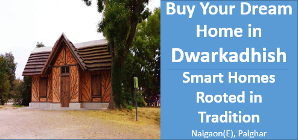

अपने सपनों का घर खरीदें द्वारकाधीश में:स्मार्ट घर, परंपरा में जड़ें
सम्पूर्ण जीवनशैली
-लाभ: संतुलित जीवन
गुरुकुल में जीवन को मानसिक, शारीरिक और आध्यात्मिक संतुलन पर आधारित किया जाता था। आधुनिक इमारतों में योग, ध्यान, आयुर्वेदिक चिकित्सा और सतत जीवनशैली को शामिल करने से निवासियों को संतुलित जीवन जीने का अवसर मिलता है।
-उदाहरण:योग और ध्यान के लिए विशेष स्थान बनाना, जहां लोग मानसिक शांति पा सकें।
समुदाय और सामाजिक संबंध
- लाभ: एकजुटता और सामूहिक भावना:
गुरुकुल में समुदाय का महत्व था, जहां लोग एक साथ मिलकर शिक्षा प्राप्त करते थे। आधुनिक इमारतों में साझा गतिविधियाँ, सांस्कृतिक आयोजन और सामूहिक अध्ययन केंद्र सामाजिक संबंधों को मजबूत बना सकते हैं।
- उदाहरण:सामुदायिक केंद्र में कार्यशालाएं, त्योहारों का आयोजन या सांस्कृतिक कार्यक्रम आयोजित करना, जिससे लोग एक-दूसरे से जुड़ें।
स्थिर और पर्यावरण-संवेदनशील जीवन
- लाभ: प्राकृतिक और टिकाऊ जीवनशैली:
गुरुकुलों में प्राकृतिक जीवनशैली को बढ़ावा दिया जाता था। आधुनिक इमारतों में सौर ऊर्जा, वर्षा जल संचयन, और हरे-भरे बागों को शामिल करके एक सतत और पर्यावरणीय रूप से जागरूक जीवनशैली को बढ़ावा दिया जा सकता है।
- उदाहरण:रेन वाटर हार्वेस्टिंग, सोलर पैनल्स, और जैविक बागवानी से संबंधित सुविधाएं जो पर्यावरण को बचाती हैं।
स्वास्थ्य और कल्याण
- लाभ: शारीरिक और मानसिक स्वास्थ्य:
गुरुकुल में शारीरिक स्वास्थ्य (योग, ध्यान) और मानसिक स्वास्थ्य पर जोर दिया जाता था। आयुर्वेदिक चिकित्सा, फिटनेस केंद्र, और मानसिक शांति के लिए गतिविधियां निवासियों के समग्र स्वास्थ्य को बढ़ावा दे सकती हैं।
पीढ़ी दर पीढ़ी संबंध
-लाभ: बड़ों का सम्मान और मार्गदर्शन
गुरुकुल में बुजुर्गों को अत्यधिक सम्मान दिया जाता था और वे युवाओं को मार्गदर्शन प्रदान करते थे। आजकल की इमारतों में बुजुर्गों के लिए विशेष क्षेत्र और मेंटरशिप कार्यक्रम शामिल किए जा सकते हैं, जो पीढ़ी दर पीढ़ी संबंधों को बढ़ावा देंगे।
सम्पत्ति का मूल्य और विशेष पहचान (USP)
-लाभ: अद्वितीय पहचान और बढ़ी हुई मांग
गुरुकुल शैली की सुविधाओं के साथ आधुनिक इमारतों को प्रस्तुत करने से यह संपत्ति एक विशेष पहचान प्राप्त कर सकती है। इस प्रकार की जीवनशैली को पसंद करने वाले खरीदारों के लिए यह एक आकर्षक प्रस्ताव हो सकता है।
-उदाहरण:इमारत को "आधुनिक गुरुकुल जीवनशैली" के रूप में विपणन करके एक विशिष्ट उपभोक्ता वर्ग को आकर्षित किया जा सकता है।
स्वास्थ्य-conscious और परिवार-उन्मुख खरीदारों को आकर्षित करना
-लाभ: स्वास्थ्य और परिवार को प्राथमिकता देने वालों के लिए आकर्षक
ऐसी इमारतें स्वास्थ्य-conscious परिवारों, पेशेवरों, और वृद्ध निवासियों के लिए आदर्श हो सकती हैं, जो संतुलित जीवनशैली, स्थिरता, और समुदाय की भावना की तलाश में हैं।
-उदाहरणऐसी सुविधाएं जैसे बच्चों के लिए शिक्षा केंद्र, योग केंद्र और परिवारों के लिए स्वास्थ्य कार्यक्रम।
आधुनिक सुविधाएं और पारंपरिक तत्वों का संयोजन
-लाभ: दुनिया की बेहतरीन बातों का मिश्रण
आधुनिक सुविधाओं (जैसे लक्ज़री फीचर्स) को पारंपरिक मूल्यों के साथ मिलाने से एक संतुलित और संपूर्ण जीवन अनुभव बनता है। निवासी आधुनिक जीवन की सुविधाओं का आनंद ले सकते हैं, साथ ही वे उन परखी हुई प्रथाओं से भी जुड़ सकते हैं जो उनके स्वास्थ्य और व्यक्तिगत विकास को बढ़ावा देती हैं।
-उदाहरणस्मार्ट घरों में पारंपरिक तत्वों को शामिल किया जा सकता है, जैसे कि वास्तु-अनुकूल डिज़ाइन या प्राकृतिक सामग्री (लकड़ी, पत्थर) का उपयोग, जिससे एक सामंजस्यपूर्ण और संतुलित रहने की जगह बनती है।
निष्कर्ष
गुरुकुल शैली के तत्वों को आधुनिक इमारतों में जोड़ने से एक ऐसा वातावरण बनता है जो निवासियों को मानसिक, शारीरिक, और आध्यात्मिक संतुलन प्रदान करता है। यह जीवनशैली उन लोगों के लिए आकर्षक हो सकती है जो स्वस्थ, संतुलित और सामूहिक जीवन जीना चाहते हैं। इसके अलावा, यह संपत्ति के मूल्य में वृद्धि करने और एक विशेष पहचान बनाने में भी मदद कर सकता है।
Contact us
+91 72088 43484 / +91 72088 43487
kkcreateandbiuld@gmail.com
Radha Nilaya, Plot No. 164/2,
Bapane Village, Chandrapada Road,
Naigaon (E) - 401208,
Maharashtra, India.